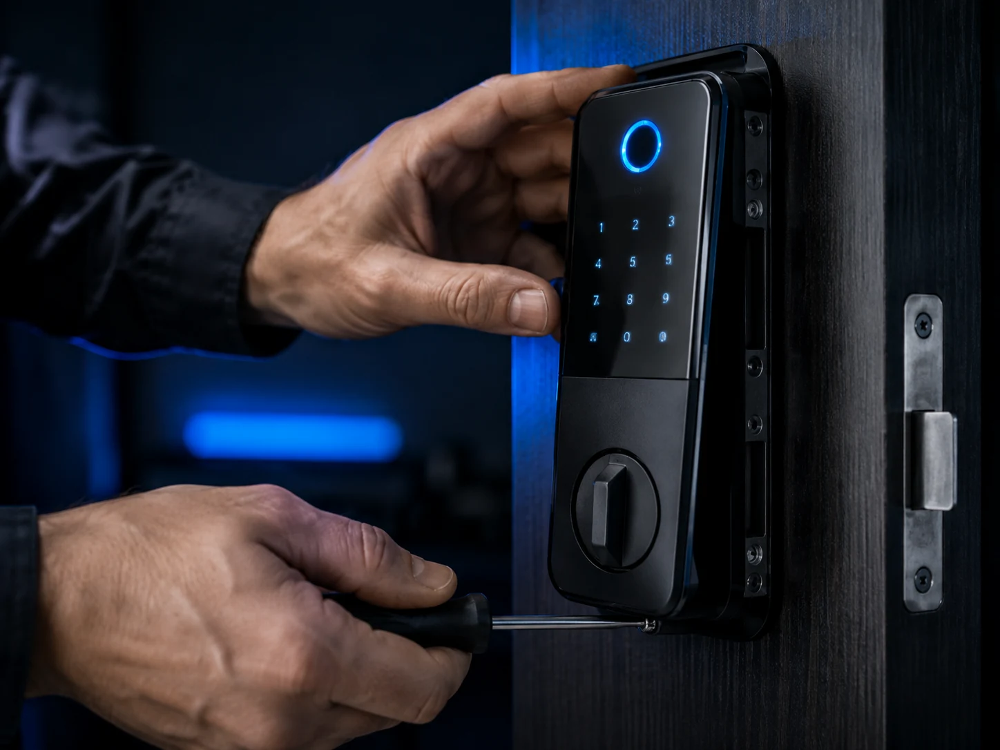
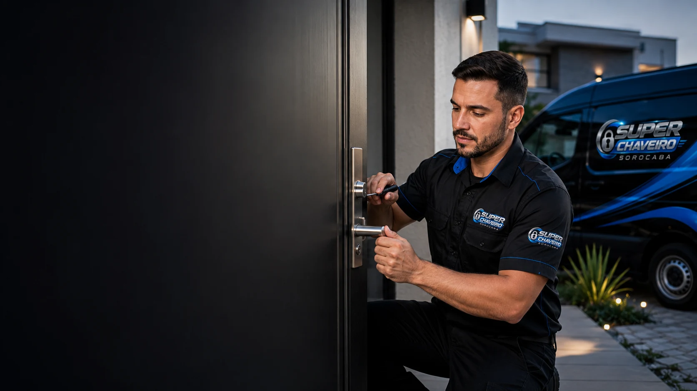
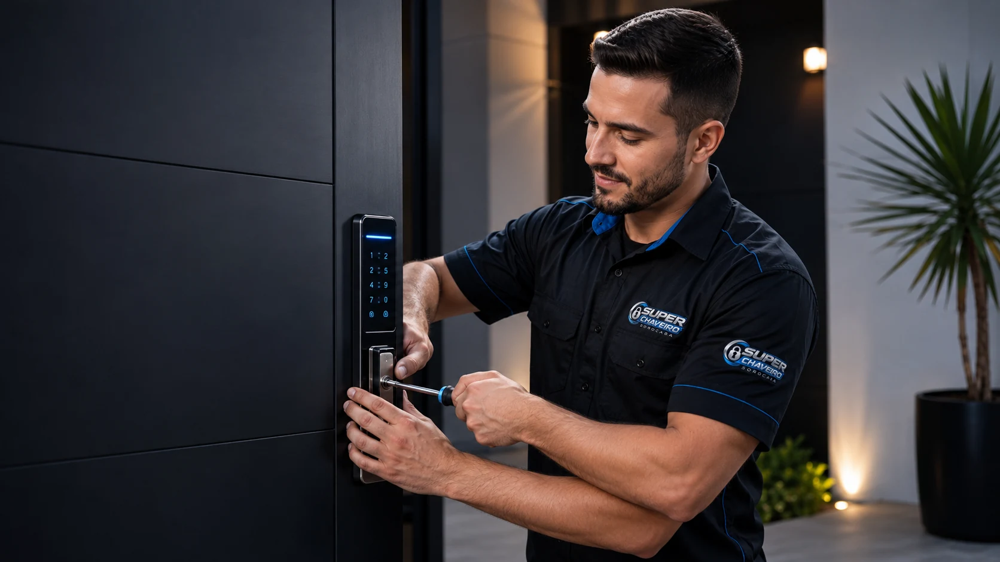
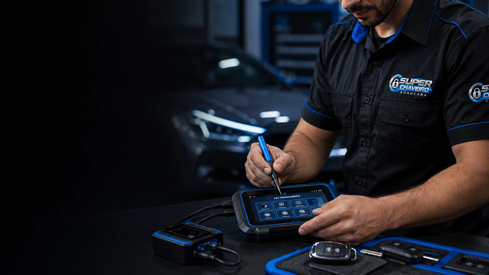

Residencial
Chaveiro residencial
- Abertura de portas e fechaduras
- Cópias de chaves simples e tetra
- Troca de segredo e conserto de fechaduras
- Instalação de fechaduras simples, tetra e digitais
Chaveiro residencial e automotivo
Aberturas, chaves codificadas, fechaduras digitais, cópias e reparos. Atendimento em Sorocaba e região, todos os dias, das 8h às 22h.
Soluções completas
Atendimento para residências e veículos, com estrutura móvel para ir até você em Sorocaba e região.

Residencial
Automotivo

Soluções para portas e fechaduras com atendimento no local.

Instalação de modelos eletrônicos para modernizar o acesso da sua casa.

Confecção, cópia e programação de chaves para veículos nacionais e importados.
Confiança e estrutura
Experiência, mobilidade e apresentação profissional para atender demandas residenciais e automotivas com praticidade.
Veículos equipados e padronizados para atendimento externo em Sorocaba e região.
Identificação visual clara para mais confiança durante o atendimento no local.
Disponibilidade de segunda a domingo, das 8h às 22h.
Pix, cartões de crédito e débito ou dinheiro. Desconto de 10% para pagamento via Pix ou dinheiro.
Atendimento móvel
Precisa de atendimento na residência, no trabalho ou junto ao veículo? Entre em contato e informe sua localização e o serviço necessário.
Atendimento: todos os dias, 8h às 22h
Precisa de um chaveiro?
Envie uma mensagem com o tipo de serviço e sua localização para agilizar o atendimento.
Contato
Atendimento residencial e automotivo com base em Sorocaba e deslocamento para a região.